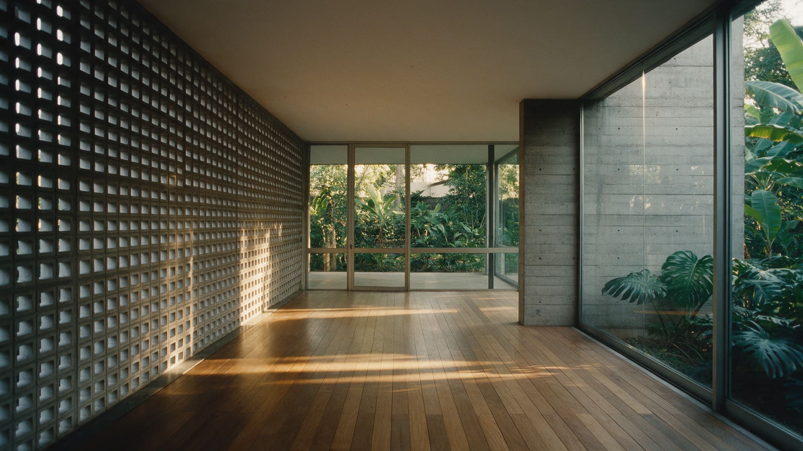
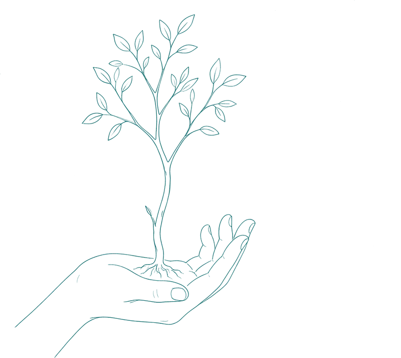
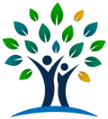

01Missão
Contribuir para respostas mais qualificadas.
Contribuir para que pessoas e instituições construam respostas mais qualificadas aos problemas, conflitos e danos da sociedade.

A forma como lidamos com conflitos e danos pode mudar relações e instituições.
01Missão
Contribuir para que pessoas e instituições construam respostas mais qualificadas aos problemas, conflitos e danos da sociedade.
02Visão
Ser referência nacional na produção de conhecimento, na formação de profissionais e no desenvolvimento de soluções restaurativas.
Reconhecer que toda experiência pode gerar conhecimento, aperfeiçoar práticas e fortalecer pessoas, equipes e organizações em um processo contínuo de evolução.
Desenvolver soluções fundamentadas na pesquisa científica, integrando conhecimento, experiência prática e avaliação contínua para enfrentar problemas complexos.
A transformação não vem só do método. São as relações humanas que constroem novas formas de responder aos problemas, conflitos e danos.
Trabalhamos para que pessoas e instituições desenvolvam formas cada vez mais qualificadas de responder aos problemas, conflitos e danos da sociedade.
Nossa abordagem

O IBPR atua a partir da integração entre pesquisa, formação e inovação. Acreditamos que respostas mais qualificadas aos problemas, conflitos e danos não surgem de ações isoladas, mas da combinação entre conhecimento científico, desenvolvimento de capacidades e implementação de soluções adaptadas à realidade de cada organização.
Essa forma de atuação permite aproximar a produção acadêmica dos desafios concretos enfrentados por escolas, empresas, órgãos públicos e instituições de justiça e segurança pública.

Administradora de Empresas e Advogada, com especialização em Docência Superior, Fernanda é responsável pela gestão institucional e operacional do IBPR.
Graduada em Administração de Empresas e em Direito, com especialização em Docência do Ensino Superior. Atuou como professora da Universidade Estadual de Goiás (UEG), advogada e Subprocuradora-Geral do Município de Goianésia, acumulando experiência nas áreas de gestão, administração pública, docência e assessoria jurídica.
É facilitadora de Círculos de Construção de Paz, certificada pela Escola Judicial do Tribunal de Justiça do Estado de Goiás (EJUG), participando de iniciativas voltadas à formação e à difusão das Práticas Restaurativas.
No Instituto Brasileiro de Práticas Restaurativas (IBPR), lidera a gestão institucional e o desenvolvimento organizacional, sendo responsável pelo planejamento estratégico, pela coordenação administrativa, pela estruturação operacional e pelo suporte à implementação dos programas, cursos e projetos desenvolvidos pelo instituto. Sua atuação assegura que a produção científica, a formação e a inovação desenvolvidas pelo IBPR sejam transformadas em ações concretas, sustentáveis e capazes de gerar impacto para pessoas e instituições.
Professor e pesquisador, Decildo é responsável pelo desenvolvimento dos conteúdos, cursos e programas de formação do IBPR, bem como por suas atividades de pesquisa e produção de conhecimento.
Juiz de Direito do Tribunal de Justiça do Estado de Goiás, atuou por mais de duas décadas na área criminal, com experiência em justiça criminal, execução penal e desenvolvimento de políticas públicas. Exerceu a coordenação do Núcleo Permanente de Justiça Restaurativa do Tribunal de Justiça do Estado de Goiás, integrou o Grupo de Monitoramento e Fiscalização do Sistema Carcerário e do Sistema Socioeducativo de Goiás (GMF-GO), o Conselho Estadual de Segurança Pública de Goiás e o Grupo de Trabalho do Ministério da Justiça responsável pela elaboração da política nacional de Justiça Restaurativa no sistema prisional brasileiro.
É mestre em Políticas Públicas voltadas à reintegração social de pessoas condenadas e doutorando em Direito, desenvolvendo pesquisa sobre Justiça Restaurativa, cultura institucional e transformação de organizações. Foi pesquisador visitante da Australian National University (ANU), na Austrália, onde aprofundou estudos sobre práticas restaurativas e transformação institucional sob a supervisão da Professora Meredith Rossner.
Em 2019, recebeu o prêmio de Melhor Prática da Justiça Criminal Brasileira, concedido pelo Fórum Nacional de Juízes Criminais (FONAJUC), em reconhecimento ao desenvolvimento de iniciativas inovadoras na área criminal. É coautor, ao lado do Defensor Público do Estado de Mato Grosso, Maxual Dias, do livro Justiça Restaurativa na Execução Penal, obra dedicada à aplicação da Justiça Restaurativa no contexto do sistema prisional brasileiro. Atua ainda na formação de magistrados, membros do sistema de justiça, policiais penais, servidores públicos e facilitadores em diferentes regiões do país.
Sua trajetória é marcada pela integração entre pesquisa acadêmica, formulação de políticas públicas e implementação prática de programas restaurativos, buscando aproximar a produção científica dos desafios concretos enfrentados pelas instituições.
Servidora pública com atuação profissional dedicada exclusivamente à Justiça Restaurativa, Érica possui experiência na aplicação de processos restaurativos em contextos de elevada complexidade, especialmente na justiça criminal, no sistema prisional e em situações de violência doméstica.
Defensor Público, especialista em Criminologia e facilitador de práticas restaurativas, Maxuel é também coautor dos livros Justiça Restaurativa na Execução Penal e Justiça Restaurativa: Novos Caminhos para o Sistema Penal.
Servidora pública com atuação profissional dedicada exclusivamente à Justiça Restaurativa, Mônica acumula ampla experiência na implementação e no acompanhamento de práticas e programas restaurativos em diferentes contextos. É instrutora de práticas restaurativas, com destacada experiência no desenvolvimento de programas restaurativos em ambientes escolares.
Se você compartilha nosso propósito, deixe seu contato e conte um pouco sobre você.
Conheça nossa rede, acompanhe o que estamos construindo e, se fizer sentido para você, aproxime-se.